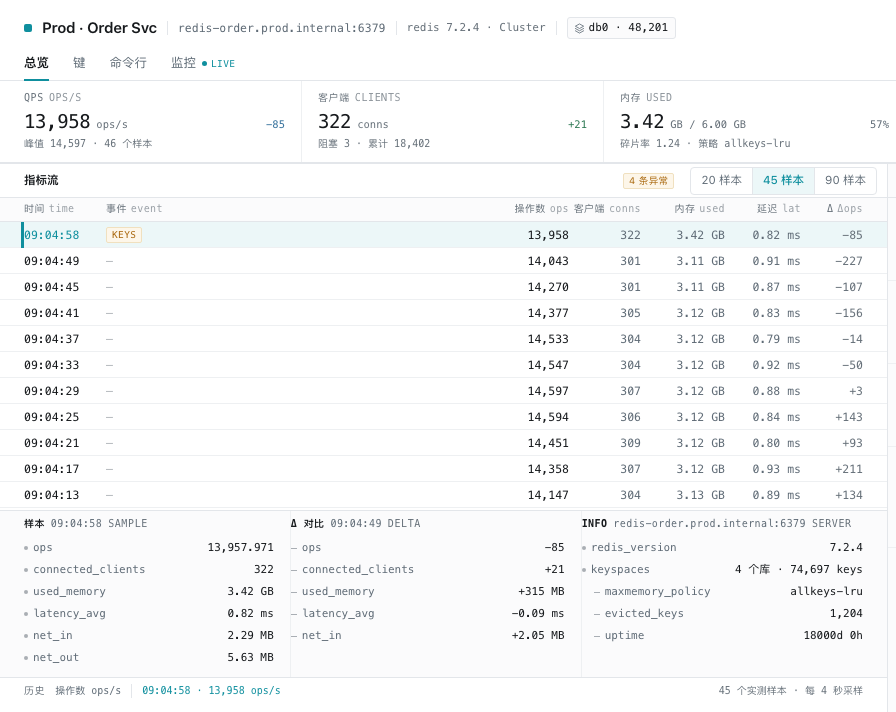

一个窗口，装下所有 Redis 实例。
保存与切换连接、浏览键空间、执行命令、读取指标。每个实例都有自己的数据库、健康状态与命令历史——你始终知道现在看的是哪一个。
无需账号 · 连接信息只保存在本机 · 更新包经 Ed25519 签名

当前版本VERSION
0.3.0
2026 · 最新发布
值类型TYPES
6
string · hash · list · set · zset · stream
指标采样SAMPLE
4s
后台常驻，窗口隐藏时暂停
凭据加密CREDENTIALS
AES-256-GCM
本地 0600 密钥文件，可选钥匙串
先看数，再看键。

打开实例，第一屏就是它现在的状态。读数、采样流、趋势和告警在同一列里排开，不用在面板之间找数字。
- 读数条
- QPS、客户端、内存、延迟常驻顶部，峰值与均值同时给出。
- 采样流
- 每 4 秒一条；↑ ↓ 逐条检视，相邻样本直接对比 Δ。
- 历史趋势
- 只绘制实测样本，异常起点在曲线和列表上同时标记。
- 告警建议
- 已驱逐键、阻塞命令、客户端堆积，每条都能跳到能处理的视图。
- 刷新
- ⌘R 立即刷新采样；窗口隐藏或打开对话框时自动暂停。
SCAN，而不是 KEYS。
键列表按固定列宽排布：名称、TTL、类型、大小、底层编码。前缀相同的键自动归组，游标翻页，不会阻塞实例。
key
ttl
type
cache:feed
10m
STRING
user:1001
1h
HASH
queue:orders
—
LIST
lock:order:1002
—
STRING
user:1001 · id / name / email
1h
HASH
- 游标分页
- SCAN COUNT 可调，单次会话最多保留 2,000 个键。
- 值预览
- 原始、JSON、Hex、HTML、Markdown 五种视图，切换键时保留阅读位置。

命令行和监控，不必离开实例。
命令行 / CLI
多会话 · 只读

多会话标签、历史翻阅、命令名 Tab 补全；只读开关和 KEYS 拦截是默认的安全边界。
监控 / MONITOR
吞吐 · 复制 · 慢查询

命令吞吐、网络进出、复制拓扑与延迟、INFO、慢查询和客户端连接在同一页。
连接是上下文，不是书签。

每个连接记住自己的数据库、分组和标识色。当前实例的名称、地址、引擎版本和实时状态常驻标题栏，误连生产环境这件事在界面上没有模糊空间。
| 部署模式 | Standalone · Sentinel · Cluster |
|---|---|
| 认证 | ACL 用户名 · 密码 · TLS |
| 安全边界 | 只读标记 · CLI 只读默认 · 危险命令拦截 |
| 凭据存储 | 本地 AES-256-GCM · 系统钥匙串可选 |
| 身份标识 | 7 色实例标识，只影响列表，不改状态 |
下载 Redis Manager
0.3.0 是当前版本。macOS 为 Universal 安装包，Windows 为 x64 安装程序；更新包优先使用差分下载，签名与校验和随发布一起提供。
通过命令行安装
macOS · Linux
curl -fsSL https://github.com/duanyongcheng/redis-manager/releases/latest/download/install.sh | sh
Windows
irm https://github.com/duanyongcheng/redis-manager/releases/latest/download/install.ps1 | iex
最新发布LATEST RELEASE
版本0.3.0
macOSredis-manager-0.3.0.dmg
Windowsredis-manager-setup-0.3.0-amd64.exe
校验SHA256SUMS
在 GitHub 查看全部发布